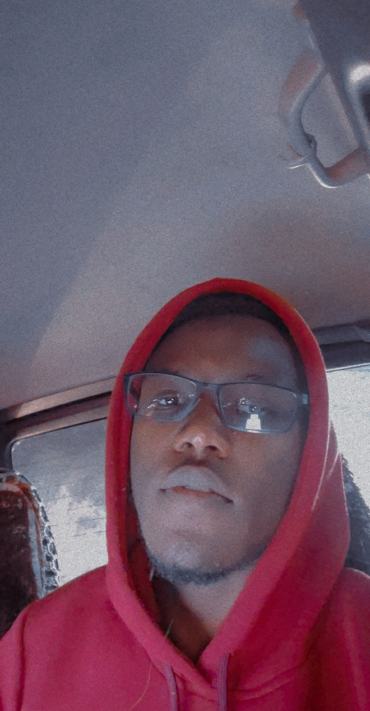

THE
CODE
CAPTAIN
X
Home
About
Why
Contact
Y
<
Hello there
Welcome to my World.
My name is Jamal, a Computer Science graduate
and also an ALX certified Full Stack Software Engineer/Web Developer.
I have a solid Foundation in C and Python,
i also have a solid understanding of html, css and javascript.
i spend most of my time crawling through the command line,
i'm proficient in linux and the devops part of it
I am from Kaduna State, Nigeria. I've had a thing for tech
and computers since when i was a kid,
so i can say i was into tech before i even got into tech.
At some point i deviated a little, i was deeply in love eith planes,
and i wanted to be a pilot at some point,
but well this is where my real passon lies
i guess i can't escape the pull. I still Love planes, cars and Tech.
I love Anime, F1, Tennis and Football,
also enjoy the movies, Tv series and Good Music
